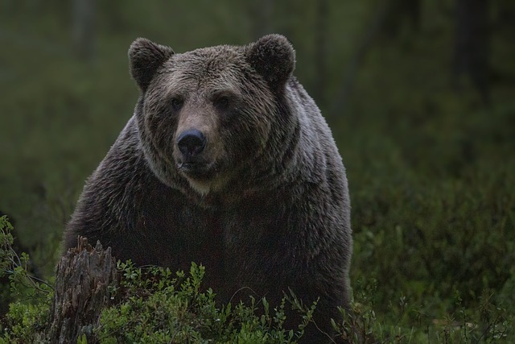

10 Цікавих Фактів про Ведмедів.
1. Тільки ведмеді можуть прямо ходити на задніх лапах, як людина.
2. На коротких дистанція ведмеді можуть бігти зі швидкістю 55км/год.
3. Ведмедів вважають одними з найрозумніших тварин.
4. У ведмедів найкращий нюх серед ссавців. Полярний ведмідь може відчути запах здобичі на відстані 20 км.
5. Під хутром білих ведмедів насправді чорна шкіра.
6.Хутро білого ведмедя насправді є прозорим, воно позбавлене пігменту кольору. Через заломлення світла, нам здається, що воно біле.
7. Ведмідь гризлі з'їдає понад 20 тисяч калорій в день.
8. Серед полярних ведмедів, в сплячку впадають тільки вагітні самки, а самці полюють цілий рік.
9. В дикій природі, ведмеді живуть приблизно 30 років.
10. Собаки, вовки та лисиці - найближчі родичі ведмедів.
Перейти до наступної тварини